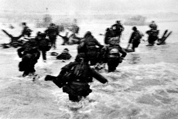
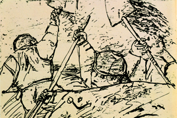

Lezione 19  La seconda guerrra mondiale
La seconda guerrra mondiale

-
215
70
-
265
133
-
430
775
-
180
325

NORMANDIA
"Vittoria completa. Niente altro". Così il generale Eisenhover sintetizza gli obiettivi della operazione Overlord, alla vigilia dello sbarco che all'alba del 6 giugno riporta le truppe alleate in Francia. Sulle spiagge della Normandia si svolgono accaniti combattimenti, che il fotografo Robert Capa immortala efficacemente; alla fine la superiorità degli Alleati ha ragione delle difese tedesche.
Vengono consolidate le teste di ponte da cui in meno di tre mesi passeranno milioni di soldati diretti a Berlino. In tutta la Normandia cimiteri di guerra, lapidi e musei ricordano ancora oggi ai visitatori uno dei momenti cruciali della seconda guerra mondiale.
LINEA GOTICA
Nel corso del 1944 i tedeschi fortificano in Italia una linea di difesa di oltre trecento chilometri che corre dalle Alpi Apuane attraverso l'Appennino fino all'Adriatico. Diventa nota come Linea Gotica, e si dimostra molto difficile da superare. Gli Alleati la sfondano soltanto negli ultimi giorni di guerra.
In entrambi i campi combattono italiani: con i tedeschi ci sono le truppe della Repubblica Sociale Italiana, con gli alleati i gruppi di combattimento dell'esercito fedele ai Savoia.
Un ruolo importante svolgono le formazioni partigiane, che sulle montagne della Toscana e dell'Emilia erano particolarmente attive. Il pittore Zeno Birolli rievoca il clima di guerra in una serie di disegni dall'impatto crudo ed espressionistico che ha per titolo "Italia '44".FILIPPINE
La più grande battaglia aeronavale della storia viene combattuta dal 23 al 26 ottobre nel golfo di Leyte, nelle Filippine. I giapponesi mobilitano tutte le loro restanti forze per impedire gli sbarchi di americani e australiani sulle isole, ricche di materie prime necessarie all'impero.
Falliscono, nonostante il largo impiego di kamikaze, piloti suicidi al comando di aerei imbottiti di esplosivo. Dopo la sconfitta la flotta di superficie giapponese cessa di essere un pericolo per le forze alleate: la maggior parte delle navi superstiti resterà confinata in porto per mancanza di carburante.MOSCA
Le truppe sovietiche avanzano nei paesi dell'Europa orientale senza incontrare troppe difficoltà, e questo preoccupa Stati Uniti e Gran Bretagna, che invece devono fare i conti con l'accanita resistenza delle truppe tedesche in Francia.
Il 9 ottobre Churchill va a Mosca per un incontro riservato con Stalin, durante il quale vengono decise le rispettive sfere di influenza nell'Europa che sarebbe uscita dalla guerra: pochi scarabocchi a matita su un foglio che Churchill è tentato di bruciare per evitare di essere accusato di eccessivo cinismo, ma alla fine conserva. Appunti di lavoro che decideranno il destino di milioni di persone.